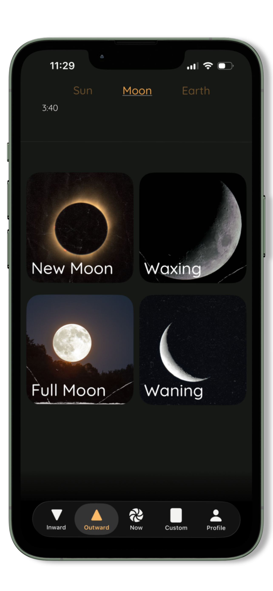
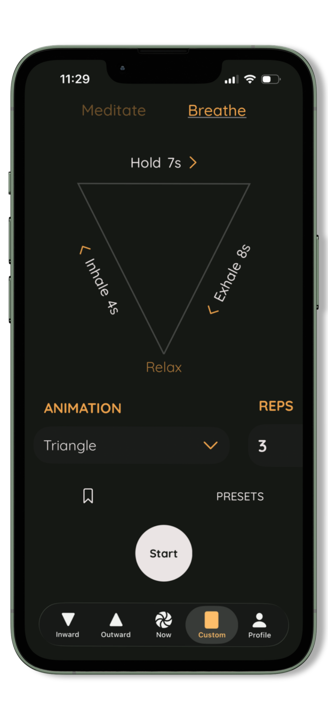
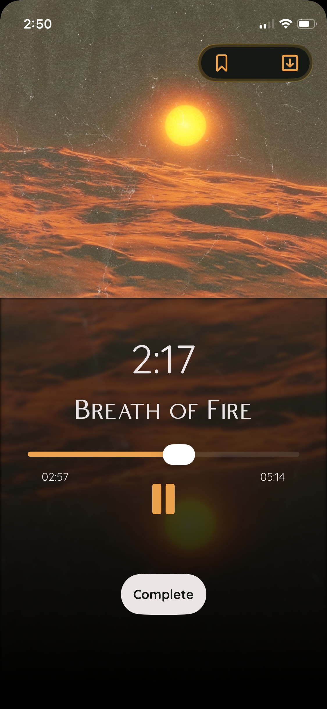
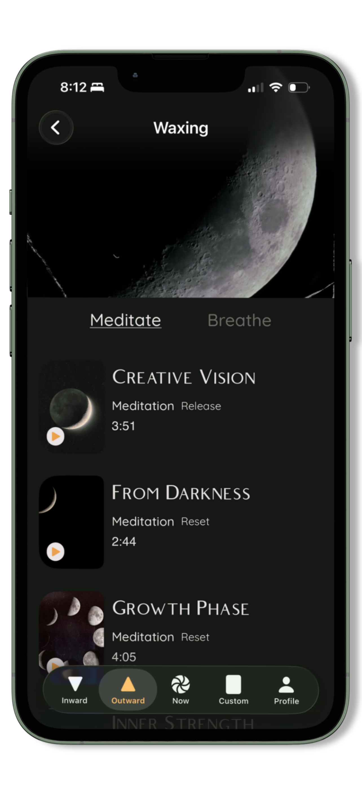

INWARD
Daily Meditation &
Breathwork

The Cycles of Nature, the Rhythm of You.
Reconnect with yourself and the natural world through guided meditation, breathwork, and mindfulness that move with your body, your energy, and the cycles around you.

AsWithin is built on one simple idea:
When you tune into your inner rhythm, you begin to live in harmony with the cycles of nature. Every session is a moment to slow down, breathe, and return to yourself.
THE PRACTICE
Turn Inward - Look Outward - Make it entirely your own
Daily Meditation &
Breathwork
Align with
Nature's Cycles

Create Your Own
Practices

Made by a small business that is women-owned and LGBTQ-owned. We build from lived experience and a simple belief: when you are rooted in the cycles of nature, you become a part of the rhythms of life. This app is our invitation to slow down, breathe, and come back to yourself.
Experience Yoga Nidra and NSDR methods shown to calm the nervous system and deepen rest.

Every practice is tuned to specific healing frequencies, chosen to aid your healing experience.

Connect with nature's cycles while syncing them up with your own body. Even use the moon to cycle sync your menstruation.
